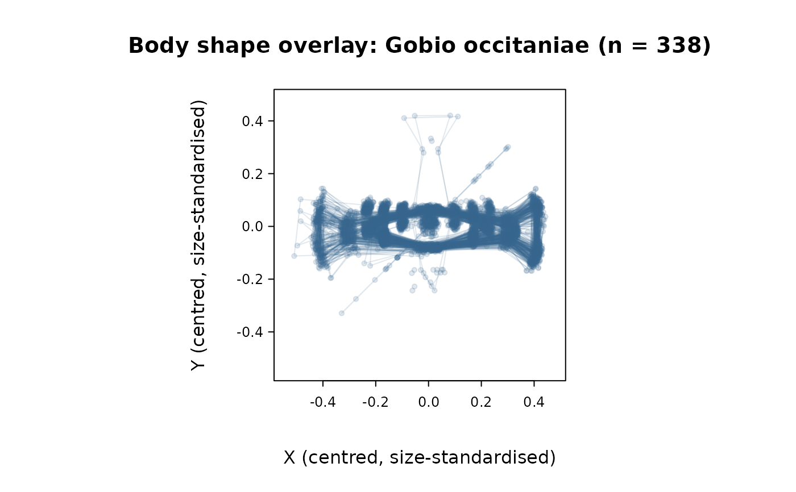
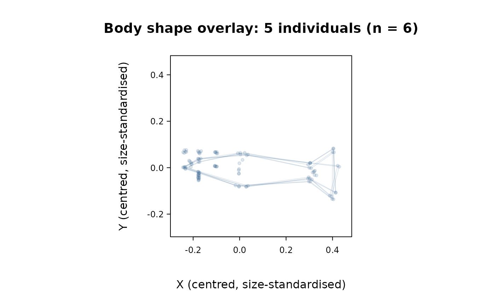

Overlay the body shape of every specimen in a species or a set of individuals
Source:R/plot_fishmorph_shapes.R
plot_fishmorph_shapes.RdSuperimposes the FISHMORPH-scheme landmark configurations – points and
body outline only, no landmark numbers, measurement segments, eye, or
internal reference lines – of every specimen belonging to a given
species, or of an explicit set of individuals, on a single figure, so
shape variability within that group can be seen at a glance rather than
one specimen at a time (as in plot_fishmorph_points()).
Usage
plot_fishmorph_shapes(
landmarks,
species = NULL,
individuals = NULL,
align = TRUE,
color = "steelblue4",
alpha = 0.15,
...
)Arguments
- landmarks
An object of class
"intrait_landmarks"with at least 21 two-dimensional landmarks digitized following the FISHMORPH scheme (seefishmorph_segments()).- species
Character scalar, a single value of
landmarks$metadata$species– every specimen of that species is plotted. Exactly one ofspecies/individualsmust be supplied.- individuals
Character vector of individual/specimen identifiers to plot. Matched against
landmarks$metadata$individualif that column exists (so a fish's code selects every digitization of it, e.g. two rows fromload_t26_saudrune_landmarks("operators"), one per operator), and otherwise directly against the specimen identifiers (dimnames). Exactly one ofspecies/individualsmust be supplied.- align
Logical, centre each specimen's configuration on its own centroid and rescale it to unit centroid size before overlaying it (translation and isotropic scale only – no rotation; see Details). Defaults to
TRUE. Set toFALSEonly whenlandmarksis already fully comparable across specimens (e.g. Procrustes-aligned output fromgpa_fish()); overlaying raw digitized coordinates without aligning them first would mix genuine shape differences with differences in each specimen's position/scale within its own photograph, which are not informative about shape.- color
Colour used for every specimen's points and outline. Defaults to
"steelblue4".- alpha
Transparency (
0-1) applied tocolor, so that overlapping specimens read as a denser cloud rather than a solid mass. Defaults to0.15.- ...
Further arguments passed to
graphics::plot().
Value
Invisibly returns a named list of the (aligned, if
align = TRUE) p x 2 coordinate matrices actually plotted, one per
matched specimen.
Details
Only each specimen's landmark points and its FISHMORPH body outline
(points 1-5-3-16-18-19-17-4-6, closed back to 1 – the same path drawn
by plot_fishmorph_points()) are drawn; the 11 coloured measurement
segments, eye, internal reference lines, landmark numbers, and scale
bar of plot_fishmorph_points() are all omitted, since the goal here
is a fast visual read of shape variability across many specimens at
once rather than a detailed inspection of any one of them. Any
landmark missing (NA) for a given specimen is silently dropped from
that specimen's outline path (as in plot_fishmorph_points()), and a
specimen's outline is simply not drawn if fewer than two of its
outline landmarks are present (its points, if any, are still shown).
With align = TRUE (the default), each specimen is independently
centred on its own centroid and divided by its own centroid size (the
root sum of squared landmark distances from that centroid; Bookstein,
1991; Dryden & Mardia, 2016) before being drawn – the translation and
scale steps of a Procrustes superimposition, without the rotation
step. Rotation is deliberately not applied here: unlike gpa_fish(),
which estimates the single rotation that jointly minimises squared
point-to-point distance across a whole sample – a well-defined
operation only for the full data set being jointly analysed, not for a
handful of specimens picked out afterwards for display – this
function has no such joint alignment to fall back on for an arbitrary
species/individuals subset. In practice this means genuine
differences in how a fish happened to be oriented on its digitization
photograph (tilt, mirroring) will still show up here as apparent shape
differences; run standardize_orientation() on landmarks beforehand
to remove that source of noise if it is a concern for the data set at
hand, or pass already Procrustes-aligned coordinates with
align = FALSE.
References
Bookstein FL (1991). Morphometric Tools for Landmark Data: Geometry and Biology. Cambridge University Press.
Dryden IL, Mardia KV (2016). Statistical Shape Analysis, with Applications in R (2nd ed). Wiley.
See also
plot_fishmorph_points() (one specimen at a time, full
anatomical detail), standardize_orientation() (fix orientation
before overlaying many specimens), gpa_fish() (full Procrustes
alignment, including rotation, across a whole data set),
morpho_space()/trait_space() (ordination-based, rather than
shape-outline-based, view of group-level variability)
Examples
fish <- load_t26_saudrune_landmarks()
plot_fishmorph_shapes(fish, species = "Gobio occitaniae")

# or by an explicit list of individuals:
some_fish <- fish$metadata$individual[1:5]
plot_fishmorph_shapes(fish, individuals = some_fish)
